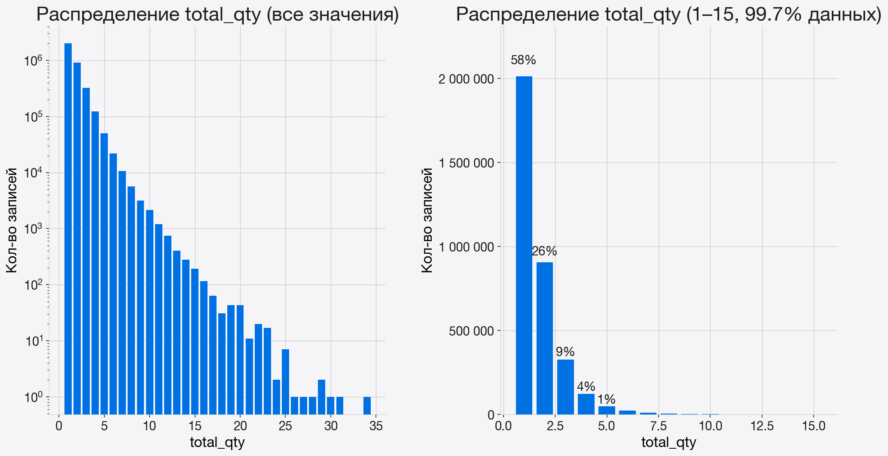
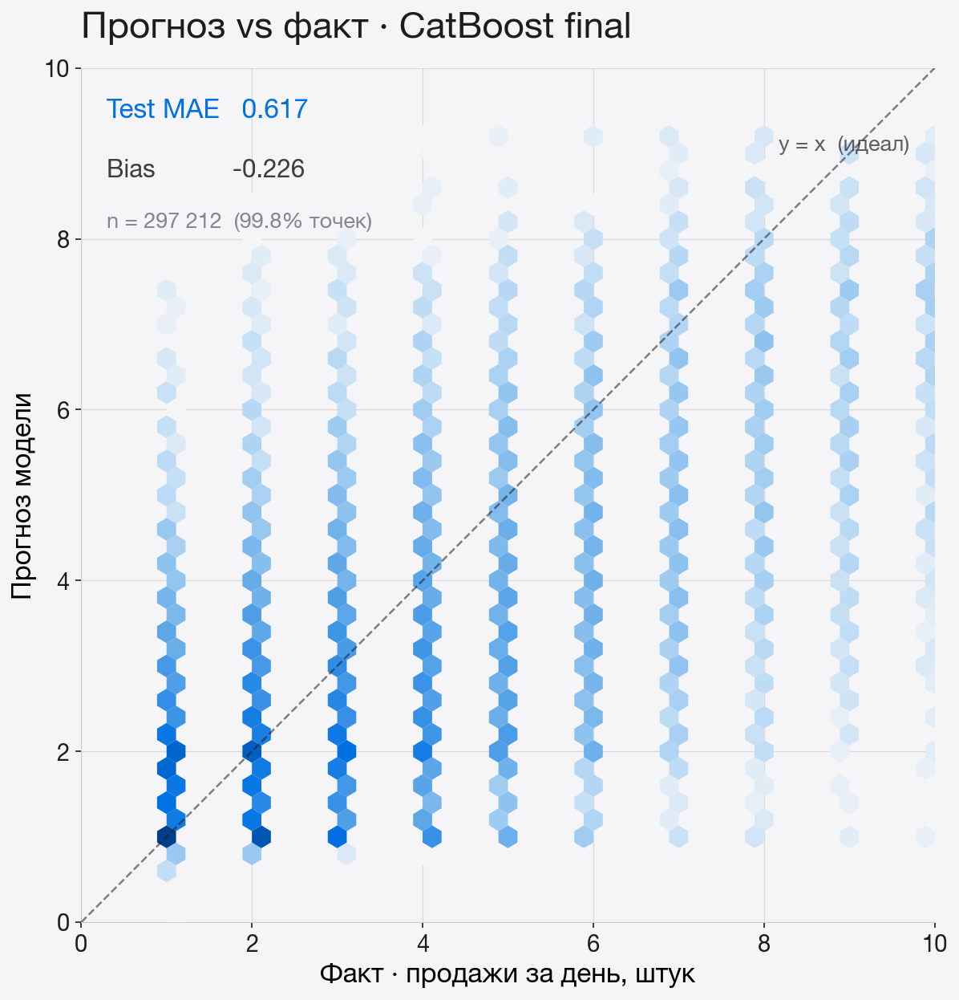
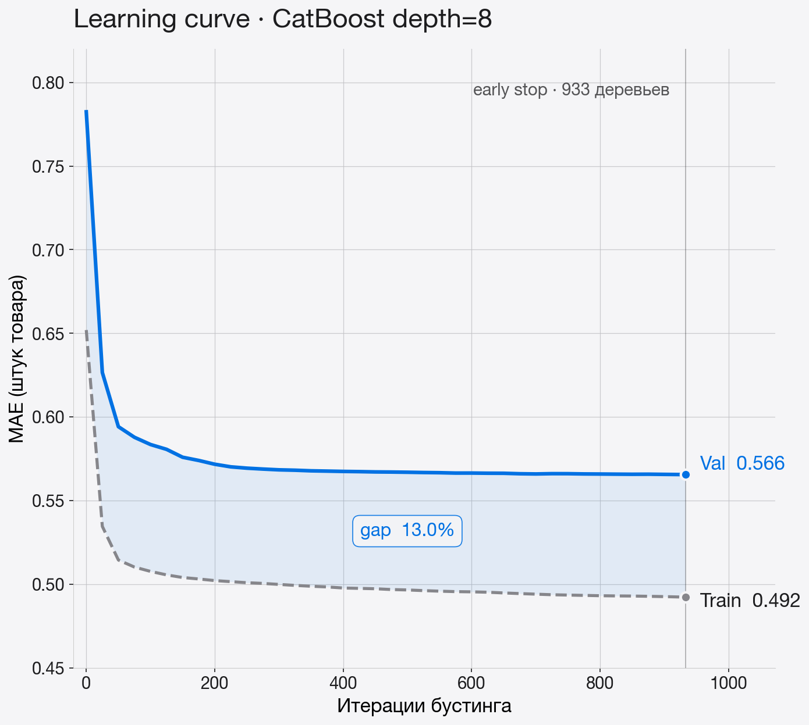
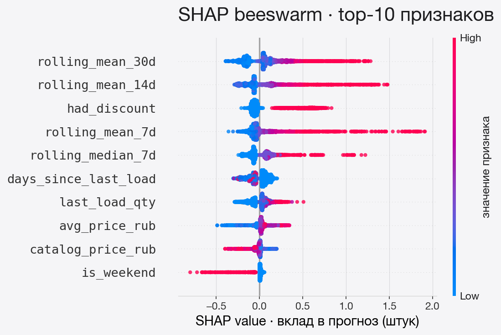
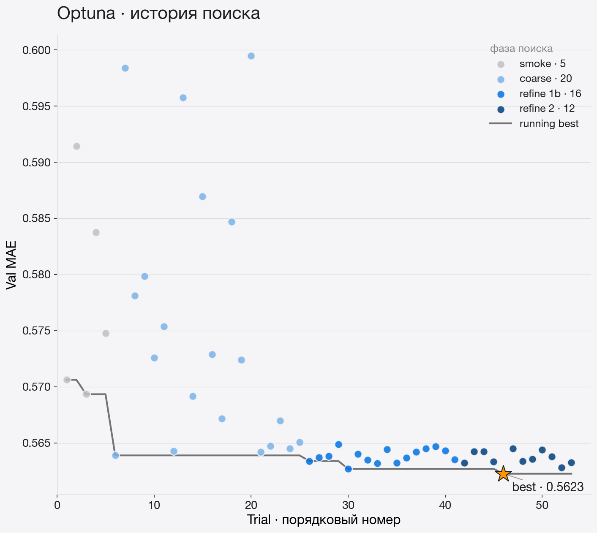

Ошибка в любую сторону превращается в убыток.
Ошибка в штуках напрямую интерпретируется в списания и потерянную выручку. Устойчива к редким выбросам в продажах.
Соответствует реальному циклу загрузки. Более длинные горизонты отложены на будущее.

.shift(1) — на момент предсказания в фичах нет информации о целевом дне.| Модель | Описание | Val MAE |
|---|---|---|
| Global Mean | Среднее по всему train | 0.886 |
| Group Mean | По паре (автомат, товар) | 0.755 |
| Lag-1 | Продажи вчера | 0.784 |
| Rolling Mean 7d | Среднее за последнюю неделю | 0.660 |
| depth | 8 |
| iterations | ~933 (early stop) |
| learning_rate | 0.05 |
| loss | MAE |
| cat_features | native |



Censored demand: ноль продаж при пустом слоте трактуется моделью как нулевой спрос.
Availability-aware demand. Явно моделировать факт наличия товара, обучаться только на днях с подтверждённой доступностью.

| Модель | Val MAE | Test MAE | Δ vs. baseline |
|---|---|---|---|
| Rolling Mean 7d | 0.660 | — | — |
| CatBoost | 0.566 | 0.617 | −14% |
| LightGBM | 0.551 | 0.599 | −17% |
Censored demand: ноль продаж при пустом слоте неотличим от нулевого спроса.